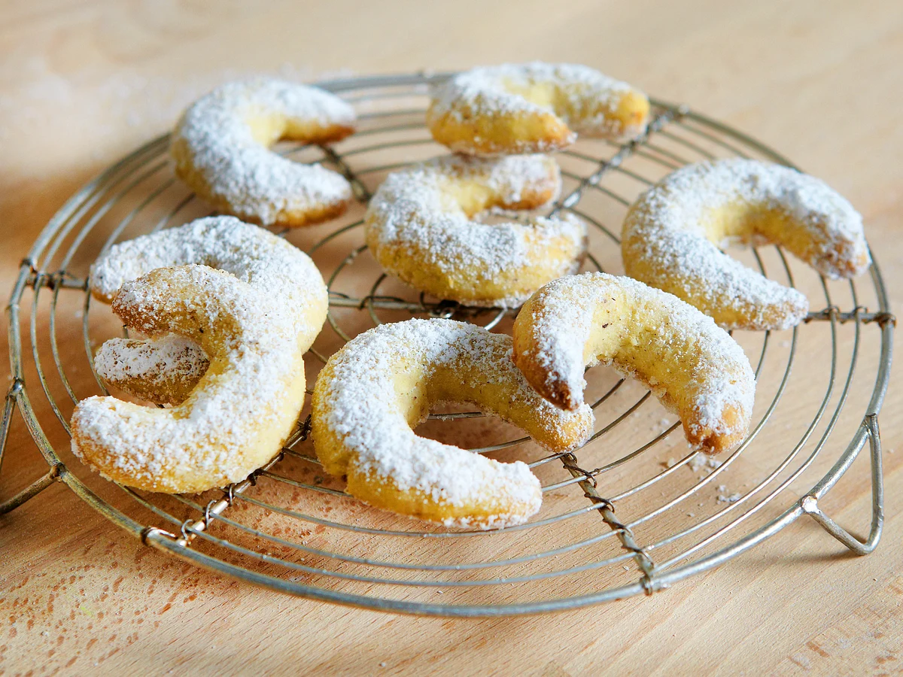

Vanillekipferl

This Almond Crescent Cookies will melt in your Mouth and thoroughly win you over! If you try these, you won’t bake any other. Promised! These cookies have a long shelf life and are ideal as gifts.
2 cups (240 g)white flour½ cup (115 g)white sugar200 gunsalted butter, soft125 galmond flour2 tspvanilla sugar- Seeds from 1 Vanilla Bean (optional)
1egg yolk- Pinch of salt
Mix the butter, sugar, vanilla sugar, salt, seeds from 1 vanilla pod (optional) and egg yolk until combined.
Add flours and mix only until just combined.
Turn the Dough out onto a working Surface and knead the dough gently until smooth.
Wrap the dough in plastic wrap.
Refrigerate dough for at least 1 hour, preferably overnight.
Remove a portion of the dough. Keep remaining dough refrigerated while you proceed if needed.
Knead the dough shortly until it is smooth.
Roll the dough into a Log as thick as your thumb.
Divide the log into 2 cm (0.8 inches) slices (about 10 grams each).
Form each slice into a firm, small ball.
Shape each ball with the palm of your hand into 5 - 6 cm (2 - 2.5 inch) logs. The little logs should be slightly thicker in the middle, with tapered ends.
Gently bend the little log into a crescent shape.
Transfer the cookies to a baking sheet (lined with parchment paper) about 3 cm (1 inch) apart.
Bake the cookies in the preheated oven at 350°F (180°C) on the middle rack for 10-11 minutes. Bake them until the edges begin to turn light golden.
Let the cookies cool on the baking sheet.
¼ cup (30 g)powdered sugar2 tspvanilla sugar
Combine the powdered sugar and vanilla sugar.
Sprinkle the cookies with the sugar mixture. Enjoy!